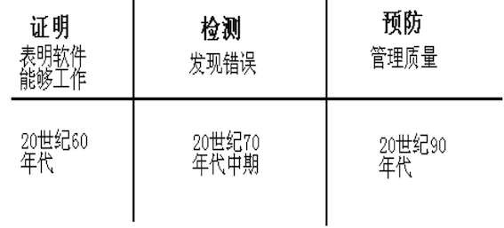

软件测试的发展

1960年代是调试时期（测试即调试）
1960年 - 1978年 论证时期（软件测试是验证软件是正确的）和 1979年 - 1982年 破坏性测试时期（为了发现错误而执行程序的过程）
1983年起，软件测试已有了行业标准(IEEE829)，它需要运用专门的方法和手段，需要专门人才和专家来承担。
1990年起软件迅速发展，测试行业也更着发生了巨大变化，开始引入专业测试工具
什么是软件测试
在规定条件下对程序进行操作,从而发现错误,对软件质量进行评估的一个过程.
软件测试的目的
是想以最少的人力，物力和时间找出软件中潜在的各种错误与缺陷，通过修正各种错误和缺陷提高软件质量，回避软件发布后由于潜在的软件缺陷和错误造成的隐患以及带来的商业风险。
注意:不要和软件测试的定义混淆
软件测试的定义
使用人工或自动手段来运行或测试摸个系统的过程,其目的在于检验它是否满足规定的需求或是弄清预期结果和实际结果之间的差别.